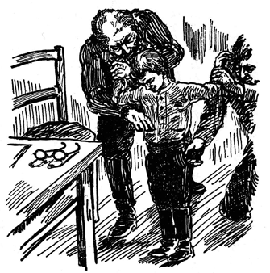

フョードル・クジミッチ・チェーチェニコフ――これがソログーブの本名である。フョードルは名、クジミッチは父称といって、父親の名に特定の語尾をつけて、自分の名と併用するものである。
彼は千八百六十三年ペテルブルグで生まれた。父はポルタワ県出身の仕立屋で、母は農婦あがりだった。ソログーブが四つのときに父が死んで以来、母はよその家の女中奉公をして一人子を育て上げた。ソログーブは幼い時から母の奉公先の邸で、音楽や演劇などに親しむ機会を持ち、読書に対する深い趣味を養われた。彼はたくさんの書物を読んだが、中でも愛好してやまなかったのは『ロビンソン』『リア王』『ドン・キホーテ』などで、これらの書はほとんどそらで覚えていた。
千八百八十三年、ペテルブルグの師範学校を卒業したソログーブは、各地に移り住みながら、教師を勤め、傍ら詩を作っていたが、間もなく長篇小説『重苦しい夢』、続いて同じく長篇の『小悪魔』を発表して、一流の作家として名をうたわれるようになった。二十五年間教育に尽して職を退いた後、創作に心をうちこんで、千九百二十七年になくなるまで、じつに二十巻の著作を残した。
ソログーブの最大傑作は『小悪魔』とされているが、われわれに最も愛着を感じさせる、親しみ深い作品は短篇、殊に少年少女を主題にした短篇小説である。けがれのない少年の魂をほめたたえ、これを穢す大人の生活の醜さ、卑しさを憎み呪うソログーブの気持は、レース細工のようにこまやかな、美しい文章で、心にくいまでに写し出されている。（訳者）
［＃改ページ］
＊
この世では、いい事といやな事がまじりあい勝ちなものである。一
年級の
生徒でいるのはいい
気持だ――それはこの世できまった
位置を作ってくれるからだ。しかし、一年生の生活にだって、時々いやなことがある。
夜が
明けた。歩き
廻る
足音や、話し
声などがざわざわし始めた。シューラは目をさました。そのとき
始めて気がついたのは、自分の着ているものが何か
破れたという感じだった。それは
気持が悪かった。何か
横っ
腹の
辺で
皺くちゃになったと思うと――やがてその
中にシャツが
破れて、もみくたになったという
感覚が、もっとはっきりして来た。
腋の下が
裂けて、その
裂け口が一ばん下まで
届きそうになったのが感じられた。
シューラはいまいましくなった。つい
昨日、ママにそういったのを思い出した。
「ママ、僕に
新しいシャツを出してよ。このシャツは
腋の下が
破れてんだもの。」
ママの返事はこうだった。
「あしたもう
一日着てらっしゃい、シューラちゃん。」
シューラはいつも
不機嫌な時によくする
癖で、ちょっと顔をしかめながら、さも
癪だというような
調子で、
「だって、ママ、あしたになったらすっかり
破れてしまうじゃないの。ぼく
乞食みたいな
恰好して歩くな
厭だあ！」
けれども、ママはお
仕事の手を
止めようともしないで――一
体あんなにのべつ
縫物ばかりして何が
面白いんだろう！――
不足そうな声でいった。
「うるさいね、シューラ、今お前なんかに
構ってる
暇はないんだよ。ママは
忙しいんですから。そうママに
附きまとってばかりいるなんて、いやな
癖を
始めたものね！ あすの
晩には取っかえてあげるって、そいってるじゃないの。もっと
悪戯を
加減したら、
着物だってもう少しもつのにねえ。お
前ったら、まるで
身体に
刃物でもくっつけてるみたいなんだもの――やり切れやしないわ。」
ところが、シューラは
決して
悪戯っ子ではなかったので、
不平そうにいった。
「これよりか
悪戯を
加減するなんて、どうしたらいいの？ あれよか
減らせやしないや。だって、僕ほんのぽっちりしか
悪戯しないんだもの。
悪戯をするたって、どうしてもしずにいられないだけやってるんだよ。あれっくらいしないわけに行かないや。」
で、とうとうママはシャツを出してくれなかった。ところが、その
結果はどうだったろう！ シャツは
裾まですっかり
裂けてしまった。もうこうなったら、
棄ててしまうより
仕方がない。ほんとに
何て考えのないママだろう！
壁の向こうでは、ママが早く家を出ようと思って、せかせかと
歩き
廻っている
音が
聞える。ママは
外にいい
仕事を
持っていて、たくさん
おあしがもらえるので、いつまでもやめたくないのだという
事を、シューラは思い出した。それはもちろん、いいことだけれど、やがて今にもママが行ってしまうと、シューラは
破れたシャツを
着て、
学校へ
出かけなければならなくなる――そうしたら、シャツは
晩までには、どんなになるかわかりゃしない！
シューラは
素早くはね
起きて、
毛布を
床へおっぽり
出すと、はだしで
冷い
床板をぱたぱたと大きく
鳴らしながら、ママのところへ
飛んで
行き、いきなりこうわめいた。
「ほうら、ママ、これを
見て
頂戴！ きのう僕そういったじゃないの、ほかのシャツを
出してくんなきゃ
駄目だって。それだのにママがしてくれないもんだから、ね、ほうら、ご
覧よ、こんなになっちまったじゃないの！」
ママは
腹の
立ったらしい目つきでシューラを
睨んだ。そして、いまいましそうに顔を赤くして、ぶつぶつ
小言をいい出した。
「いっそもう
裸で
駈けだしたらいい、この子は！ なんて
恥っさらしだろう！ この子にかかったら、ほんとに手こずってしまう。すっかりわがままになってしまってさ！」
いきなりシューラの
両肩を
掴んで、自分の
寝室へ引っぱって行った。シューラは
心配になって、
胸が
どきりとした。ママはこういった。
「わたしが
急いでるのを知ってるくせに、やっぱりうるさく
附きまとうんだね。ほんとに
情ない子だよ！」
けれど、このシャツのままで
打っちゃって
置かれないのは、もう目に見えていた。
仕方なしに
箪笥をあけて、まだ
袖を
通さない
新しいシャツをとり出した。というのは、ママがきょう
着せてやろうと
思ったシャツは、みんなまだ
洗濯屋へ行っていて、
夕方でなければ返って
来なかったからである。
シューラはすっかり
喜んでしまった。
新しいシャツを
着るのは、とてもいい
気持だった――ごわごわして、ひやりとして、
変に
肌をくすぐるのが、おもしろくってたまらない。
袖を通しながらも、笑ったり、ふざけたりした。けれども、ママはもうその
相手をしている
暇が一
分もなかったので、いそいで出て行ってしまった。
＊
その
朝学校で、お
祈りの前に、
講堂にいるシューラのそばへ、ミーチャ・クルイニンが
寄って
来て、
「君、どうした、持って来た？」とたずねた。
シューラは、新しい歌を
集めた
本を持って
来てやると、きのうクルイニンに
約束したのを
思い
出した。ポケットへ手を
突っこんでみたが、本はなかった。
「じゃ、
外套のポケットへ
置いて
来たんだ。今すぐ取って
来るよ。」
こういって、
外套室へかけ出した。このとき
小使がベルのボタンを
押したので、
味もそっけもない広い
校舎じゅうへ、けたたましいベルの
音が
響き渡った。お
祈りに行く
時間が
来たのだ――これをしなくちゃ
授業を
始めるわけにゆかないのだから。
シューラはあわてた。
外套のポケットへ
手を
突っこんでみたが、手にあたらない。と、
不意に
気がついて見ると、それは人の
外套だった。シューラはさもいまいましそうに
叫んだ。
「やっ、
大変だ、人の
外套へ手を突っこんじゃったあ！」
こういって、自分のを
捜しにかかった。
と、すぐそばで
冷やかすような
笑い
声が
聞えた。
悪たれで
通っているドゥチコフのいやな声だ。シューラは
思いがけなさにぴくっとなった。
遅刻して、たったいま
来たばかりのドゥチコフは、大きな声でこういった。
「おい、君、どうしたい、
人の
外套のポケットさがしかい？」
シューラはぷりぷりした
声で
答えた。
「それが君にどうだってんだい、ドゥチカ？ 君のポケットじゃあるまいし。」
本がみつかったので、
講堂へ
走って
帰ると、もう
生徒らはお
祈りの
整列をしていた。
背の
順に
長い
行列を
作っているので、小さいのは前の方で
聖像に近く、大きいのはうしろに立っている。そして、どの
列でも
右側にいるのがちょっと高い方で、
左側は
低めの
子供になっている。そればかりでなく、少しわきの
方には、
讃美歌を
器用にこなす子供たちが
並んでいて、その
中の一人はいつも
歌い
出す前に、そっといろいろな声で
唸るような
真似をする――これを
称して、
調子を
決めるというのだ。みんな大きな声で、さっさと
無表情に歌った。まるで
太鼓でもたたくような
工合だ。
当番の
生徒は
祈祷書を見ながら、歌わないで読むことになっている
祈祷を
朗誦した――その朗誦がやはり大声の
無表情で、一口にいえば、何もかもいつもの
通りだった。
お
祈りのあとで、ひと
騒動もちあがった。
＊
二年生のエピファーノフが、ナイフと一ルーブリ
銀貨をなくしたのである。この
赤いほっぺたをした
太っちょの子供は、
盗難に気がつくと、わっと
泣声をあげた。ナイフは
真珠貝の
柄のついた
綺麗なものだったし、一ルーブリ
銀貨はのっぴきならぬ
用にいるのであった。で、
先生のところへいいつけに
行った。
さっそく
調べが
始まった。
ドゥチコフは、シューラ・ドリーニンが
外套室で、人の
外套のポケットを
探っているのを、自分の目で見たと
申し
立てた。シューラは
生徒監の
部屋へ
呼ばれた。
生徒監のセルゲイ・イヴァーヌイチは、うさん
臭そうな
目付で、ひたとこの
少年を見つめた。
……やがて今に
緊急教員会議が
招集され、
続いて
小泥棒は
退学処分になる……。それは何も
一向いいことではない
筈なのだけれど、いうことを聞かぬいたずら
者の
腕白どもに、
老教師はもうほとほと手を
焼いているので、まるで
探偵みたいな
顔つきをしながら、まっ赤になってもじもじしているこの
少年を
見つめていたが、そろりそろり
質問を始めた。
「なぜお
前は
祈祷の時に
外套室なんかにおったのだ。」
「
祈祷の前です、
先生。」おびえて
上ずった声で、シューラは
小鳥でも
啼くようにいった。
「まあ
祈祷の前としてもよい。」
生徒監はいった。「しかし、わたしはなぜかと
聞いておるのだ。」
シューラはそのわけを
話した。
生徒監は
言葉を
続けた。
「まあ、
本を
取りに
行ったとしてもよい。だが、なんのために
他人のポケットへ手をつっ
込んだのだ？」
「
間違ったんです。」とシューラは
辛そうに
答えた。
「
困った
間違いだな。」
責めるように
頭を
振りながら、生徒監は
注意した。「が、お前いっそ
正直にいってしまったがよい――お前はつい
間違って、ナイフと一ルーブリ
銀貨を取りやしなかったかね？ つい
間違って、え？ ひとつ自分のポケットを
見てごらん。」
シューラは
泣きだした。そして、
涙の
合間にこういった。
「僕なんにも
盗みやしません。」
「もし
盗まなかったのなら、なぜ
泣くのだ？」と生徒監はいった。「わたしは何もお
前が
盗んだとはいやしない。ただ
間違ってしたろうと
想像するまでだ。手にあたったものを
握ってそのまま
忘れてしまったんだろう。ポケットの
中を
掻きまわしてご
覧。」
シューラは
急いでポケットの中から、この
年頃の男の子につきものになっている
他愛のない
品々を、すっかり出して見せた――それから
両方のポケットもひっくり
返した。
「なんにもありません。」といまいましそうにいった。
生徒監はためすような目つきで、その
顔を見つめていた。
「どこか
服の下にでも
紛れこんではおらんかな、え？ ひょっとしたら、
長靴の中にナイフが
落ちてるかも知れんぞ、え？」
ベルを
鳴らした。
小使がやって来た。
シューラはおいおい
泣いた。あたりのものがばら
色の
靄に
包まれて、ふわふわ
動き
出した。もの
狂おしい
屈辱感に気が
遠くなったのだ。シューラの
身体はぐるぐる
廻されたり、
探りちらかされたりして、
隈なく
検査された。おまけに少しずつ
裸にされた。
小使は
長靴をぬがして、ふるって見た。万一のために、
靴下もはいでみた。バンドもはずし、
上着からズボンも取らせた。何から何までばたばたふるって
調べてみた。

悩ましいばかりの
羞恥と、人に
屈辱を
与えるきりで、
何の
役にも立たぬ
型ばかりの
手続きを
憤る
気持、その
蔭から
躍りあがらんばかりの
喜びが、
彼の心を
貫いた。
破れたシャツは
家に置いて
来たから、今この
職務に
忠実な
教育家のこわばった手の動きにつれて、新しい
小ざっぱりしたシャツがさやさやと、かすかな
音を立てているのだ。
シューラはシャツ一
枚で立ったまま、おいおい
泣いていた。と、ドアの
外で
騒々しい
人声や、
賑かな
叫び
声などが聞えた。
ドアが
どしんと
壁にぶっつかって、
誰やら
赤い顔をしてにこにこ笑っている
子供がはいって
来た。はずかしさと、
悲しさと、新しいシャツを思う
嬉しさのこんぐらかった中で、シューラは
誰かのうきうきしたような、もじもじしたような
声を聞きわけた。
走って
来たためにやや
息ぎれがしている。
「めっかりました、
先生。エピファーノフが自分で持ってたんです。ポケットに
穴があいてたもんですから、ナイフも
銀貨も
長靴ん中へ落ちてたんです。今なんだか足の
工合が
変だと
思って見たらめっかったんです。」
すると
急に
生徒監はシューラにやさしくなって、
頭を
撫でたり、
慰めたり、
服を着るのを手伝ったりした。
＊
シューラは
泣いてみたり、また
笑い
出したりした。
家へ
帰っても、また泣いたり
笑ったりした。ママに
様子を
話して、
訴えた。
「すっかり
服をぬがしちまったんだよ。あの
破けたシャツを
着てたら、いい
恥さらしをするとこだった。」
それから……それから
別に何ごとがあろう？ ママは
生徒監のところへ出かけて行った。
生徒監を
相手にひと
騒ぎ持ちあげた上、あとで
訴えてやるつもりだったのである。けれどその
途中で、うちの子は
授業料を
免除してもらってるのだったっけ、と思い出した。
騒ぎを
持ちあげるわけに
行かなかった。それに、
生徒監はとても
愛想よく
母親を
迎えて、さんざんお
詫をいったのだから、その上どう
仕様があろう？
身体検査のときの
屈辱感は、少年の心にいつまでも
残っていた。それは
胸に深く
刻み込まれてしまったのだ。
窃盗の
嫌疑を
受けて、
身体検査までされ、
半裸体の
姿で
立ちながら、
職務に
忠実すぎる男の
手で
自由にされる――これがはずかしくないだろうか？ しかし、これも
経験なのだ。人生に
有益な経験なのだ。
ママは
泣きながらいった。
「
何にもいえないんだからね――大きくなったら、こんな
事どこじゃない、まだまだひどい目にあうかも
知れないんだよ。この
世にはいろんな
事があるからね。」